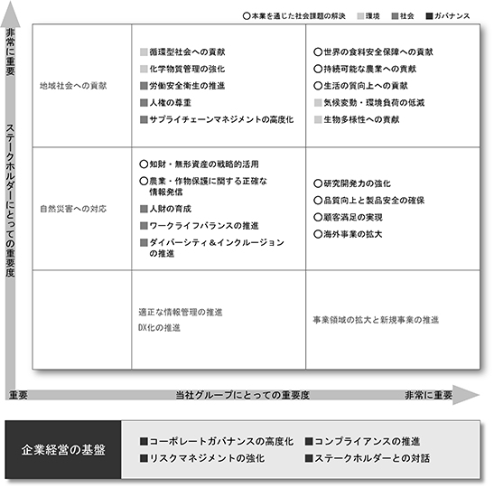
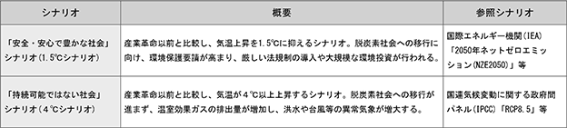
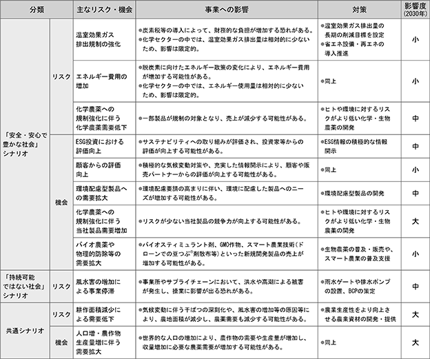
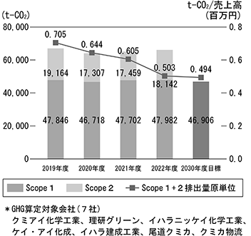
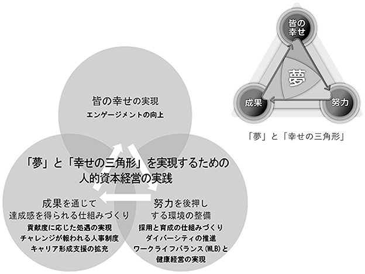
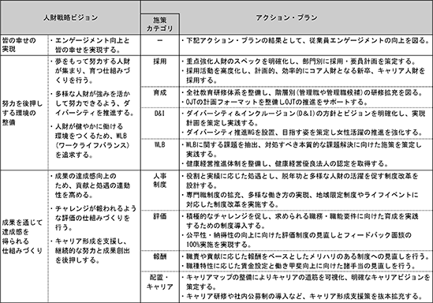

文中の将来に関する事項は、当連結会計年度末現在において当社グループが判断したものであります。
当社グループは、創立当初より安全で環境負荷の少ない農薬の開発に傾注し、国産第１号農薬の開発・製品化以来、国内のみならず、世界各地で自社開発品を中心とした製品の普及を進め、「いのちと自然」を守り育てることをテーマに、世界規模での農作物の生産性向上に貢献できるよう取り組んでおります。
当社グループは、事業の中核をなす農薬の研究開発を根幹として、効率的な経営資源の投入を図ります。また、生産、物流、販売の連携を図り、収益本位の経営に徹底し、売上、利益の確保、増大ができる企業体質を確立することを経営の基本方針としております。
今後も持続的な成長を続け、収益力の一層の強化を目指し、企業価値の向上につなげていくため、当社グループは、「売上高」、「営業利益」ならびに株主資本及び総資本の運用効率を示す指標である「自己資本利益率(ROE)」等を重要な指標として認識しております。
中期経営計画における2023年10月期の目標は、売上高126,000百万円、営業利益9,800百万円、自己資本利益率（ROE）7.3％と設定しております。
農薬を取り巻く環境に関しては、中国を中心とした海外の景気減速や地政学的リスク、燃料費の高騰の影響を受けた一方で、世界的な人口増加などを背景に食料需要の拡大が見込まれることから、中長期的には市場が拡大すると予想されております。
国内では農業従事者の高齢化・人手不足による耕作面積の減少など依然として課題が多くありますが、みどりの食料システム法が2022年７月に施行され、環境負荷低減や労働生産性向上に向けた取り組みが活発化しております。
新型コロナウイルス感染症の５類感染症移行に伴い、経済活動が徐々に正常化、緩やかに景気回復が続いておりますが、原材料価格の高騰や為替相場の変動もあり、今後の動向に注視する必要があります。
中国を中心とした海外の景気減速の可能性や、燃料や原材料価格の高騰などによる物価高、及びウクライナ情勢や中東情勢等の地政学的リスクの高まり等により、先行きは依然として不透明な状況が続くことが予想されます。
当社グループの中核事業である農薬及び農業関連事業は、世界の人口増加に伴う食料需要の増加や穀物価格の上昇などを背景として今後も拡大するものと考えられますが、上記のような不透明な状況や流通在庫の増加に起因した世界的な在庫適正化の動きを背景に、市場環境は一層厳しさを増しております。
このような状況において当社グループでは、2048年度に迎える100年企業としてのあるべき姿を視野に入れて策定した新中期経営計画「Create the Future ～できる。をひろげる～」（2024年10月期～2026年10月期）を実行していくことで、企業価値の向上に努めてまいります。
また、クミアイ化学グループ企業基本理念のもと、2021年11月１日付で制定した「サステナビリティ基本方針」ならびに、種々のESG課題に対処するため、その下に制定した10の基本方針に基づき、サステナビリティ経営を推進いたします。コア事業である農薬及び農業関連事業では、日本政府が2021年５月に策定した持続可能な食料システムの構築を目指す「みどりの食料システム戦略」、EUの「Farm to Fork戦略」への対応を継続して進めてまいります。また、化成品事業では、人々の生活に役に立つ、そして豊かにする材料の供給を通じて社会への貢献を図ってまいります。
国内販売部門におきましては、水稲用除草剤の「エフィーダ剤」及び「ベンスルフロンメチル剤」の更なる普及基盤の拡大により、水稲一発処理除草剤市場におけるシェア１位の維持を図ってまいります。また、水稲用殺菌剤「ディザルタ剤」の育成と拡販に注力するとともに、スマート農業推進のための継続的な取り組みを進めてまいります。
園芸剤分野では「ピリベンカルブ剤」など自社開発剤の推進活動を強化するとともに、マーケティング戦略に基づく新規導入剤の早期最大化に取り組んでまいります。
さらに、当社微生物農薬であるエコシリーズの再プロモーション等により、「みどりの食料システム戦略」で求められる環境負荷の低減に貢献してまいります。
海外販売部門におきましては、事業の中核をなす「アクシーブ剤」について米国、ブラジル、オーストラリア、アルゼンチン等の主要市場において新規混合剤の開発を推進し、適切な販売促進支援を行うとともに、様々なジェネリック品対策を施すことで、継続的な販売拡大・維持を図ります。同時に、一部の地域で流通在庫が増加していることから、在庫の適正化を図っていきます。また、「エフィーダ剤」の韓国での販売拡大、及びその他アジア、欧米での開発、「ディザルタ剤」の韓国における新規混合剤の上市、販売推進を行います。
今後も自社製品の普及、技術指導を通して、世界の農業の生産性向上と生産者の収入増加へ寄与してまいります。
特販部門におきましては、自社農薬製剤技術の有効活用による新規製剤受託加工品目の獲得、「エフィーダ剤」、「ベンスルフロンメチル剤」等の自社開発品目の拡充により、売上・利益の最大化を図ってまいります。また、自社原体を他社メーカーに向けさらに導出するべく、販売ルートの多様性確保を図ってまいります。
化成品事業におきましては、アラミド繊維原料となるクロロキシレン系化学品の更なる成長への展開と、ビスマレイミド・アミン硬化剤・産業用薬品・発泡スチロール類等の拡販、市場動向に合わせた受託製造ビジネスの拡大により売上・利益の最大化に努めてまいります。また、研究開発部門及びグループ化成品事業の連携強化と推進による高付加価値な新規ビジネスの創出により、化成品事業領域の拡大を図ってまいります。
その他の事業におきましては、建設業では、自社ブランド確立と一般顧客に対する認知度向上に取り組んでまいります。印刷事業では、顧客ニーズに対するサービスの向上に努め、品質の維持向上ならびに更なる生産工程の効率化を図ってまいります。物流事業では、ホワイト物流推進運動の継続とモーダルシフト・輸送網の集約等の物流効率化や機械化・自動化の推進に加え、工場・倉庫の屋根等への太陽光発電設備の設置、廃食油や廃動植物油等を原料として製造されるリニューアブルディーゼルの利用による環境負荷低減も図ってまいります。
生産資材部門におきましては、原体・製剤の効率的生産、製造条件改善による原価低減、効率的生産のための設備投資と工場機能の強化に取り組んでまいります。また、温室効果ガス排出量削減や廃棄物削減を加速し、よりクリーンな工場の実現を図ってまいります。調達に関しては、ホワイト物流推進運動への協力のため発注の早期化を含めた資材調達計画を立案、実行してまいります。
研究開発部門におきましては、従来の化学農薬に加え、微生物農薬、バイオスティミュラント等の開発により「みどりの食料システム戦略」、EUの「Farm to Fork戦略」にも対応した、環境にやさしく自然と調和した新たな製品の創出に取り組んでまいります。新規殺ダニ剤「バネンタ」と、果樹やバラの根頭がん腫病防除用の微生物農薬「エコアーク」を開発中で、国内の上市に向けた準備を進めており、継続して海外評価も進めてまいります。
農薬事業の中核をなす「アクシーブ」の新規混合剤、新製剤開発によるジェネリック品との差別化や「エフィーダ」の適用拡大、「ディザルタ」の混合剤開発等による販売の最大化を目指し、グローバルでの製品開発を継続するとともに、原体製造の最適化による利益性改善も進めてまいります。また、有機フッ素化合物（PFAS）規制を見据えた創薬研究を進めるなど、研究段階から環境負荷低減を視野に入れた製品開発に一層取り組んでまいります。
2021年より建設を進めてまいりました化学研究所Shimizu Innovation Park（ShIP）は2023年10月より本格稼働を始めました。静岡県内に分散していたプロセス化学研究センター、製剤技術研究センター、創薬研究センターを当社発祥の地である静岡市清水区の旧自社工場敷地内に建設した化学研究所に統合し、そのシナジー効果により、新農薬創製、製品化研究のスピードアップと更なる研究開発分野の領域拡大を目指してまいります。
サステナビリティ経営におきましては、当社のコア事業である農薬及び農業関連事業に深く関わる気候変動や環境負荷低減に対する取り組みとして、当社グループで排出する温室効果ガス排出量を2030年までに2019年比30％削減とする目標を掲げており、CO₂フリー電力の導入やCO₂排出量の少ない燃料への転換を進めており、さらに継続的な削減を進めてまいります。また、生物多様性への貢献として水資源や廃棄物の適正な管理と削減、生物科学研究所近隣でのビオトープの造成にも取り組んでまいります。また北海道福島町の自社保有林での植樹・育樹活動に取り組んでおり、これにより生じた間伐材を材料とした輸送用パレットを製作及び活用することで、本来、間伐材廃棄により生じるはずのCO₂排出量の削減や輸送に携わる作業者負担の軽減に貢献してまいります。
社会に関わる取り組みとして、当社は国連グローバル・コンパクトに2023年９月18日に参加企業として登録され、人権、労働、環境、腐敗防止の４分野に関わる10原則を支持し、実践してまいります。また、人的資本の強化を目指した人財戦略として、当社の期待する人財像を設定し、その期待する人財像を確保するため、採用、育成、配置／キャリア、人事制度、評価、報酬、ダイバーシティ、ワークライフバランスの課題別に人事施策案を策定し、取り組んでまいります。
当社では各自が「夢」をもって、それに向かって努力し成果を上げることで、達成感・充実感を味わう、つまり幸せになれるという流れ「幸せの三角形」を掲げております。この「夢」と「幸せの三角形」をスローガンとし、2024年度は、当社グループの新中期経営計画の初年度としての施策を着実に実行してまいります。そして、当社が設定した100年企業としてのあるべき姿である「独自技術で豊かなくらしを支え自然と調和した社会の持続的発展に貢献するフレキシブルで存在感のある企業グループ」を目指してまいります。
当社グループのサステナビリティに関する考え方及び取組は、次のとおりであります。
なお、文中の将来に関する事項は、当連結会計年度末現在において、当社グループが判断したものであります。
(1) サステナビリティ全般
当社グループでは2022年度に、事業戦略や当社グループを取り巻く社会変化などの事業環境を踏まえ、従来のマテリアリティの全面的な見直しを行いました。当社グループの20～30年後のあるべき姿を「独自技術で豊かなくらしを支え、自然と調和した社会の持続的発展に貢献するフレキシブルで存在感のある企業グループ」、「食の安定供給を支える農業に貢献し、革新的な技術と独自の事業領域を確立した最先端の化学メーカー」と定めました。このあるべき企業像の実現に向けて、ESGの要素を経営戦略に反映させ、事業の成長を通じての企業の経済的価値の向上とともに、非財務指標の向上を通じて企業の社会的価値をも向上させていくことを目指しています。各マテリアリティにはKPIを設定し、中期経営計画等の事業計画と連動させることにより、達成のための取り組みを確実に実行してまいります。
マテリアリティ・マトリックス

代表取締役社長がサステナビリティ推進委員会の議長となり、「気候変動・環境負荷の低減」、「人財の育成／人的資本の考え方をベースにした人財戦略」等の各ESG課題についての戦略の策定や取り組み課題の実行計画の進捗管理、また情報開示戦略の立案を行っています。サステナビリティ推進委員会での重要な審議事項については、取締役会に報告され、決定や監督が行われています。
気候変動は、気温上昇による病害虫の増加、異常気象増加による農業生産への悪影響等、様々な問題をもたらす深刻な社会課題といえます。そのため、当社グループは、気候変動の緩和と適応に向けて、温室効果ガス（GHG）排出量を継続的に削減するなどの取り組みを進めるとともに、2022 年11 月に、「TCFD（気候関連財務情報開示タスクフォース）提言」への賛同を表明し、TCFD 提言を踏まえた情報開示に取り組んでいます。
気候変動に関して、マテリアリティの一つに「気候変動・環境負荷の低減」を掲げ、気候変動が当社グループにもたらすリスクや機会を洗い出しています。またシナリオ分析を行い、当社グループが目指す「安全・安心で豊かな社会」シナリオ（いわゆる1.5℃シナリオ）、気候変動等の社会課題が深刻化する「持続可能ではない社会」シナリオ（いわゆる４℃シナリオ）を設定し、リスクや機会の当社グループへの影響度を評価しています。また、影響度の大きい重大なリスクや機会に対する対策を検討しています。検討の内容については、サステナビリティ推進委員会に報告し、代表取締役社長をはじめとした経営陣が気候変動リスク・機会について協議しています。
気候変動に関するリスク・機会の分析、GHGデータ開示の詳細については、当社コーポレートサイト（
主なリスクや機会、その対策については、以下のとおりです。当社グループが目指す「安全・安心で豊かな社会」の実現が、当社グループにとってプラスになることが改めて確認できました。


当社グループでは、社内各部門が認識するリスクと機会を洗い出すとともに、TCFD 等外部機関の提言や同業他社が認識している気候関連リスクや機会も参考として課題を抽出しています。抽出した課題については、財務上のインパクトを考慮した影響度評価を行い、重要度を決定します。抽出されたリスク課題は全社委員会である「リスク・コンプライアンス委員会」で年１回審議され、課題への対応策が決定されます。
当社グループでは、2019年度を基準年とし、当社グループ主要７社のScope１+２ のGHG排出量を2030 年度までに2019 年度比30％削減とする目標を掲げています。具体的には、静岡工場をはじめとする主要な工場・研究所において再生可能エネルギー由来のCO₂フリー電力を採用する等の目標達成に向けた取り組みを行っております。
GHG排出量及び削減目標

(2) 人的資本経営に関する考え方及び取組
新中期経営計画(2024-2026年度)に掲げる目標を達成し、持続的な成長を実現するためには、多様で意欲あふれる人財が集まり、育ち、能力を発揮し、のびのびと働くことができる組織風土づくりが不可欠です。当社では、中期経営計画を推進するうえで必要な人財像を特定し、これに基づく人財戦略を明確化しています。
① 目指すべき人財像
新中期経営計画では、事業戦略を支える基盤として「人財の育成／人的資本の考え方をベースにした人財戦略」を柱の一つとして掲げています。具体的には、今後の事業戦略を推進するうえで、次のスキルを有する人財を重点強化人財としています。
・コアビジネスの研究開発力をさらに強化する人財
・全社的なガバナンス体制強化のための専門人財
・海外で活躍できるグローバル人財、事業の仕組みづくりができる人財
・製品・サービスの安定供給に向けて、生産・調達に精通し、その改善を推進する人財
さらに、全社的に共通して求められるマインドセットや多様性を実現するため、次の期待人財像を掲げています。
・新しい分野にチャレンジし、イノベーション・新規事業を創出できる人財
・リーダーシップを発揮し、経営感覚を持つゼネラリスト人財
・組織の同質性を打破するキャリア採用・女性・外国・シニア人財
② 人財戦略ビジョン
当社は、〈「夢」と「幸せの三角形」〉というスローガンを掲げています。これは、各自が夢を持ちそれに向かって努力し、成果を上げることで達成感、充実感を味わう、つまり幸せになるという流れを創っていこうというものです。
上記に掲げる人財が当社に集まり、仕事を通じて成長し、達成感と働きがいを感じながら持続的に働くことができる仕組みづくりに向けて、〈「夢」と「幸せの三角形」〉のモチーフに沿って人財戦略ビジョンを打ち出しています。

まず、努力を後押しする環境の整備です。すなわち、夢をもって努力する人財が、集まり、育つ仕組みづくりを行います。また、多様な人財が強みを生かして努力できる環境整備に向けて、ダイバーシティを強力に推進します。
次に、成果を通じて達成感を得られる仕組みづくりです。社員が成果の達成実感を得られるよう、貢献と処遇の連動性を高めたり、チャレンジが報われるような評価制度の構築を行います。また、キャリアの道筋を可視化し、個々人の継続的な努力と成果創出を支援します。
これらの取り組みを通じて、皆の幸せの実現、すなわち、エンゲージメントの更なる向上を実現していきます。
③ ビジョン実現のためのアクション・プラン
人財ビジョンの実現に向けて、「採用」「育成」「ダイバーシティ」「ワークライフバランス」「人事制度」「評価」「報酬」「配置・キャリア」の８つの施策カテゴリ別に具体的なアクション・プランを策定しています。

まず、「努力を後押しするための環境の整備」として、新中期経営計画と連動した重点強化人財のスペックを明確化し、これに即した採用を推進します。また、全社教育研修体系の整備や、管理職研修の拡充、計画的OJTのためのツールを整備・実行します。さらに、ダイバーシティのビジョンを明確化するとともに、課題抽出と施策推進のためのWG（ワーキンググループ）を設置し、女性活躍推進を強化します。合わせて、休暇取得の促進等、各部門の事情に即したワークライフバランス向上策を推進していきます。
「成果を通じて達成感を感じられる仕組みづくり」のためのアクション・プランとして、専門職制度の拡充、多様な働き方の実現など、人事処遇制度の見直しを行います。また、公平性・納得性の更なる向上に向けた評価制度の見直しを行います。さらに、職責や貢献を重視した報酬制度の見直しや、働きがい向上に向けた諸手当の見直しを行います。同時に、キャリア形成支援策の拡充を通じて、多様な人財が持続的に働くことができる環境を整えます。
これらのアクション・プランを総合的に推進し、重点強化人財をはじめとしたすべての社員の幸せとエンゲージメントの向上を実現します。
1) ワークライフバランスの推進
当社では、「ワークライフバランスの推進」をマテリアリティとして位置付け、「働きやすい会社の実現」と「健康経営の実現」に向けた取り組みを進めています。
「働きやすい会社の実現」については、従業員のワークライフバランスを促す制度として、時差出勤制度とテレワーク制度を導入し、多様な人財が十分に能力を発揮し、安心して活躍できるような環境整備を進めています。
今後は、男性育児休業取得率の向上や、「くるみん認定」の取得を目指します。全社はもちろん、部署別に細やかな改善活動に取り組むことで、ワークライフバランスの一層の向上を目指して取り組みを進めていきます。
2) ダイバーシティ＆インクルージョンの推進
当社では、「ダイバーシティ＆インクルージョン（D＆I）の推進」をマテリアリティとして位置付け、「誰もが働きやすい・活躍できる会社の実現」と「女性活躍の推進」に向けた取り組みを進めています。
「誰もが働きやすい・活躍できる会社の実現」については、社員の生の声を反映させるべく、D＆I研修、D＆Iサーベイ、ワーキンググループの組成・検討という施策を組み合わせてD＆I推進計画の策定を進めています。ワーキンググループのメンバーは全社的に公募し、D＆I推進に意欲のある多様な社員の参加を促します。
※男女賃金差異理由
人事処遇制度において性別による差異はありません。管理職を含む上位等級における男性比率が高いこと、終業時間に差があること、（所定外労働時間は男性の方が長い一方、短時間勤務利用率は女性の方が高いこと）が男女の賃金格差の要因となっています。
3) 人財の育成
当社は人財戦略において、今後の事業戦略を推進するにあたり必要になるスキルやマインドセットを有する人財を重点強化人財として掲げ、その育成に取り組んでいます。
同時に、全部門共通の研修として、新入社員研修、中堅社員研修、ライフプランセミナー等の入社年次に応じた研修や、アセスメント研修、人事考課者研修のように役職に応じた研修に加え、各部門における語学研修や営業研修など実務に即した研修を実施しています。
今後もさらなる人財育成の強化に向けて、現在行っている各種研修にOJTや自己啓発の視点を加えて全社教育研修体系を構築する方針です。また、組織運営の中核である管理職研修や管理職候補者に対する育成の強化、公正な評価の実現に向けた人事評価者研修の徹底、人生100年時代における仕事観を養うキャリア研修の導入、ハラスメントの防止を目的としたEラーニングの導入など、様々な側面から人財への投資を加速していきます。
有価証券報告書に記載した事業の状況、経理の状況等に関する事項のうち、経営者が連結会社の経営成績、財政状態及びキャッシュ・フローの状況に影響を与える可能性があると認識している主要なリスクは、以下のとおりです。リスク管理については、クミアイ化学グループリスク管理に関する基本方針の下、代表取締役社長が委員長を務めるリスク・コンプライアンス委員会において、リスクの網羅性の確認・評価、リスク管理に関する施策の立案等を行っております。また、サステナビリティ推進委員会及びレスポンシブル・ケア推進委員会では、気候変動や労働安全衛生などの課題への取り組みも進めております。
なお、文中の将来に関する事項は、当連結会計年度末現在において当社グループが判断したものであり、将来において発生の可能性がある全てのリスクを網羅したものではありません。
(1) 農業及び農業関連事業領域におけるリスク
① 国内における事業活動
当社グループは、事業環境の定期的な見直しと市場動向の把握に努めて事業活動を行っておりますが、当社グループの主要な製品である農薬の需要は様々な外部環境要因による影響を受けます。天候や自然環境の影響、病害虫や雑草の薬剤耐性・抵抗性の発達、開発段階では予期できなかった農作物への薬害発生、農作物の価格低迷等による農薬需要の減少、新規他社製品との競合、法規制の強化や事故等による製品製造中止や欠品の発生、自然災害に伴う翌年度以降の耕作面積の減少等により、予想を上回る需要減が生じた場合には、当社グループの経営成績及び財政状態に影響を及ぼす可能性があります。
また、農薬の再評価（全ての既存登録農薬に対して、最新の科学的知見を基に、国がその安全性を定期的に確認する制度）では、将来の製品の経済性評価、追加の安全性データ作成のための投資判断が必要となります。取扱い製品で他社から原体の供給を受けるものがあり、それら原体の再評価の際に農薬登録が維持されず、原体供給が停止となった場合には売上高が減少し、当社グループの経営成績及び財政状態に影響を及ぼす可能性があります。
かかるリスクへの対応として、当社グループは、農林水産省や各都道府県発表の病害虫発生予報、病原菌の薬剤耐性や害虫や雑草の薬剤抵抗性の発生動向、作物の作付け状況などを常に見極めています。また、当社の販売員・普及員からの情報を活用するとともに、法規制の強化にも自社製品を網羅したタイムリーな対応を図っています。
② 海外における事業活動
当社グループは、海外での事業活動をさらに拡大していく方針でありますが、それぞれの国での法令や規制、政治、経済、農業情勢、各地域における異常気象等による病害虫・雑草の発生量、農作物価格や作付面積の変動等により、事業活動に影響を受ける可能性があります。当社グループの海外売上高は５割以上を占め、主要市場の経済情勢の悪化、農作物の価格下落による農薬需要の減少や販売価格の値下げ要求が発生した場合には、当社グループの経営成績及び財政状態に影響を及ぼす可能性があります。
国家間の貿易協定の失効、優遇税制の適用除外、輸出入に関する経済政策の変更、国家間の対立や交渉等により、輸出入に係る関税が引き上げられるリスクがあります。これによりコストが上昇し、販売価格に転嫁せざるを得ない場合には、市場での価格競争力の低下により販売数量が減少し、当社グループの経営成績及び財政状態に影響を及ぼす可能性があります。
当社グループの主力製品である畑作除草剤「アクシーブ」は、他社除草剤では防除が難しい抵抗性雑草に対して有効という性能面での優位性により販売が拡大しておりますが、世界的な農薬市場の激しい競争のなか、「アクシーブ」のシェア低下や強力な競合製品の登場による販売減が起きた場合には、当社グループの経営成績及び財政状態に影響を及ぼす可能性があります。
農薬では医薬品と同様に、物質特許期間満了後にジェネリック品が市場に参入してくることがあります。当社グループは、当社製品のジェネリック品に対して優位を保つため、製品付加価値の向上やコスト低減に努めておりますが、価格競争を克服できない場合には、売上高が減少する可能性があります。
また、当社グループは、農業情勢や市場の解析を進めるとともに、需要予測精度の向上に努めておりますが、需要予測に反する状況に至り、その影響を受ける場合には、当社グループの経営成績及び財政状態に影響を及ぼす可能性があります。
かかるリスクへの対応として、当社グループは、各国販売提携先、海外子会社との連携、密な情報交換に加え、提携コンサルタントからの情報収集、外部データベースの購入、当局等のWEBサイトの監視等により、市場環境変化の早期把握を図り、売上維持のための対策を実施することで販売計画未達リスクの低減に努めています。
(2) 化成品事業領域におけるリスク
当社グループの化成品は、多くが素材の中間体であることから、末端製品の需要や在庫状況の影響を受けます。また、中間体や末端製品の仕様変更やニーズの変化への対応が遅れた場合には、販売数量が減少し、当社グループの経営成績及び財政状態に影響を及ぼす可能性があります。
かかるリスクへの対応として、当社グループは、販売提携先と販売予測数量を共有し、変動要因の解析を行い、早期に対策を実施するとともに、製造委託先への定期的な訪問による安全管理状況、品質管理状況の把握及び複数購買による安定調達を実施しています。
(3) 新製品の開発に関するリスク
当社グループの主要な製品である農薬は、各国の法令の下、登録制度による規制がなされ、薬効・薬害、人畜に対する安全性、環境影響等に関する所定の試験成績を提出して厳しい審査を受けて農薬登録を取得する必要があります。新規有望化合物の探索研究から新農薬の製品化までには、人的資源をはじめとして、多額の研究開発経費を必要とし、長期間に亘り各種試験研究を実施することが必要になります。開発段階から多くの試験を重ねて鋭意検討しておりますが、登録に必要な試験の結果、期待通りの有効性が得られない場合や安全性等に疑義が生じた場合には、開発を中止または対象作物や対象病害虫等を制限することも想定され、当社グループの経営成績及び財政状態に影響を及ぼす可能性があります。また、各国の法規制の改正で販売機会を逸する場合や開発期間中の市場の環境変化、技術水準の進歩、競合製品の開発状況等により開発の成否、将来の成長と収益性に影響を受ける場合には、当社グループの経営成績及び財政状態に影響を及ぼす可能性があります。
当社グループは、自社開発原体や独自製剤技術、有機合成技術を活用する研究開発型企業ですが、顧客ニーズを満足させる新製品を有効に開発できなかった場合には、将来の成長と経営成績に影響を及ぼす可能性があります。
かかるリスクへの対応として、当社グループは、新しく導入される、または改正される農薬登録に関する法規制を早期に把握し、自社化合物への影響を検証し、対応策を立てています。また、各国の農薬登録要件や審査方法を把握するとともに、農薬登録に特化した専門のコンサルタントを起用し、登録可能性の試算を早期に図っています。
一方で、研究開発型企業の強みを活かして、当社グループが革新的な農薬原体の創製や、「みどりの食料システム戦略」やEUの「Farm to Fork（農場から食卓まで）戦略」などの持続可能な食料システムに合致した新製品の開発につながった場合には市場優位性獲得が期待されます。
(4) 為替変動に関するリスク
当社グループの海外売上高比率は高く、さらに、海外に連結子会社６社を有しております。急激な為替レートの変動は、当社グループの経営成績及び財政状態に影響を及ぼす可能性があります。また、当社グループは、農薬原体を含む原材料を輸入しているため、為替変動は調達コストに影響を及ぼす可能性があります。
海外子会社の経営成績は、連結財務諸表作成のために円換算されていることから、換算時の為替レートにより、円換算後の計上額が影響を受ける可能性があります。
かかるリスクへの対応として、当社グループは、先物為替予約の実施や、三国間貿易における仕入と売上の決済通貨を統一することで為替リスクをヘッジするとともに、市場動向を注視し、為替変動を織り込んだ経営計画を作成しています。
(5) 法令等の変更に関するリスク
当社グループは、コンプライアンスに対するステークホルダーからの要求が多様化・高度化するなか、コンプライアンスに基盤を置いた企業文化の醸成が必須であると考えております。そのため、役職員に対する定期的なコンプライアンス意識調査を実施し、その結果に基づく課題を反映させながら、実効性のあるコンプライアンス啓発活動に努めております。
当社グループは、化学物質の取扱いに関する国内外の法令による規制を受けております。環境問題に関する世界的な意識の高まりなどから、化学製品に対する規制は強化される傾向にあります。当社グループにおいてはレスポンシブル・ケア活動により「環境・安全・健康」の確保に努めておりますが、将来において環境に関する規制が予想を超えて厳しくなり、新たに多額の対策コストが必要になった場合には、当社グループの経営成績及び財政状態に影響を及ぼす可能性があります。
かかるリスクへの対応として、当社グループは、環境関連法令改正の情報収集及び改正に伴う対応を実施しています。環境事故が発生した場合、会社に与える有事の対応コスト及び風評被害の影響は大きいため、未然防止のための先取対応（設備、人財等）への投資も行っています。
(6) 製品の品質に関するリスク
当社グループは、各工場の品質マネジメントシステムのもと、品質保証体制の充実に努め、原料調達管理及び製造・品質管理に万全を期しておりますが、品質保証の取り組みの範囲を超えて、予期しない品質の欠陥、瑕疵、偶発的なトラブル等が生じた場合には、当社グループの経営成績及び財政状態に影響を及ぼす可能性があります。製造物責任に基づく損害賠償に関しては、保険付保で万一に備えておりますが、賠償額を十分にカバーできない可能性があります。
かかるリスクへの対応として、当社グループは、ISO管理による定期的な品質管理状況の確認を通じて、適切な品質管理の徹底を図っています。
(7) 生産・原料調達に関するリスク
当社グループは、代替調達先の確保に努めておりますが、海外からの輸入に頼る原材料や、製造技術のノウハウや製造コスト面から原材料の一部に調達先が限定されている原材料があります。当該調達先が生産設備の故障・事故や所在国の法規制等の理由により供給契約の履行ができない場合には、必要な原材料が確保できず、製造が遅延・停止し、当社グループの経営成績及び財政状態に影響を及ぼす可能性があります。また、生産拠点の分散化やグローバル展開に対応する生産体制の強化を進めておりますが、予想を上回る需要増等により、製品の安定供給に影響を及ぼす可能性があります。
ロシア・ウクライナ情勢等により海上・航空輸送の混乱や輸送費の高騰が想定を上回る場合には、当社グループの経営成績及び財政状態に影響を及ぼす可能性があります。
当社グループが調達を行う国・地域において、テロ・戦争等による政治・経済・社会的混乱、施策や法令の変更、国際貿易摩擦、文化や慣習の違いに起因するトラブルの発生等の地政学リスクが顕在化しております。ロシア・ウクライナ情勢を巡る当社グループへの影響は現時点では軽微と考えますが、状況を引き続き注視し、適切に対応してまいります。また、中国政府による脱炭素政策等の影響で調達先において製造の遅延・停止や設備投資が必要となった場合、原材料が確保できず、当社グループでの製造が遅延・停止するリスクや予想を上回る原材料コストの増加が利益を圧迫するリスクがあります。このような影響で、当社グループや調達先の事業活動が制限を受けた場合には、当社グループの経営成績及び財政状態に影響を及ぼす可能性があります。
当社グループの生産設備では、安全確保のため定期的な保守・点検を行っております。しかしながら、予期しない故障・事故等により生産が一時的に減産・遅延・停止した場合や役職員や周辺地域に大きな被害や環境汚染等が発生した場合には、当社グループの製品販売の機会損失や社会的信用の失墜等が発生する可能性があります。また、生産再開に長時間を要する場合には、当社グループの経営成績及び財政状態に影響を及ぼす可能性があります。
当社グループ製品の製造は、当社グループの自社工場だけでなく、他社に製造委託をしております。委託先の工場において、予期しない故障・事故等により生産に影響が生じたり、環境や生命に損害を与えた場合には、当社グループの販売の機会損失や補償等が発生する可能性があります。
かかるリスクへの対応として、当社グループは、海外など調達先においては、原材料の早期発注による在庫確保と代替品の手配、供給元の多元化などを進めています。また、当社グループにおいては、生産設備の定期点検、修繕により生産機能を維持するとともに、新技術の導入も図りながら老朽化設備の計画的な更新を進めています。
(8) 人財の確保・育成に関するリスク
当社グループが研究開発型企業の強みを活かして、経営理念の実現と経営計画を実行するためには、高度な専門性を持つ人財や組織運営、経営戦略を企画推進するマネジメント人財などの確保・育成を着実に行う必要があります。しかしながら、人財の確保及び育成が想定どおりに進まない場合には、当社グループの経営成績及び財政状態に影響を及ぼす可能性があります。
かかるリスクへの対応として、当社グループは、目指す人財像に必要なスペックを明確化し、計画的、かつ効率的に獲得を進めるとともに、人財の育成を強化、働き甲斐のある制度の構築や働きやすい職場づくり、ワークライフバランスの充実を図っています。
当社グループは、中期経営計画の重要方針に「人財の育成／人的資本の考え方をベースにした人財戦略」を掲げ、目指す人財像として、「新しい分野にチャレンジし、イノベーション・新規事業を創出できる人財」、「リーダーシップを発揮し、経営感覚を持つゼネラリスト人財」、「組織の同質性を打破する女性・外国・シニア人財」を設定し、人財の育成と確保に取り組んでいます。
(9) 減損会計適用に関するリスク
当社グループは、事業の維持・成長や新たな事業機会の獲得のために、継続的な設備投資を必要としていますが、当社グループの事業資産の価値が大幅に下落した場合、あるいは収益性の低下等により投資額の回収が見込めなくなった場合、減損処理を行うことにより当社グループの経営成績及び財政状態に影響を及ぼす可能性があります。
かかるリスクへの対応として、当社グループは、グループ各社の経営状況の的確な把握に加えて、重要案件の進捗や課題の共有化などを行っています。また、政策保有株式については、時価のモニタリングを行い、減損の要否を判断しています。
(10) 知的財産に関するリスク
当社グループは、保有する知的財産権を厳正に管理しておりますが、一部の国では知的財産権が完全には保護されておらず、第三者による侵害を防止できない場合には、当社グループの製品の売上収益が減少する可能性があります。また、予期しない事態により技術情報・ノウハウが漏洩し、第三者が類似製品を製造・販売する可能性があります。
さらに、他社の知的財産権を十分に調査・解析した上で事業活動を行っておりますが、他社から知的財産権の侵害を訴えられた場合には、製品の製造・販売等の差し止めや損害賠償金等が発生して、当社グループの経営成績及び財政状態に影響を及ぼす可能性があります。
農薬の研究開発では、有効性や安全性の確認のための開発期間が長期にわたることから、販売開始に至るまでの間に物質特許の残続期間が短くなる場合があります。当社グループの主力製品である「アクシーブ」の物質特許がいくつかの国で満了したため、他社のジェネリック品が参入して売上が減少し、他地域でのアクシーブや他製品の売り上げ増で補填できない場合には、当社グループの経営成績及び財政状態に影響を及ぼす可能性があります。
かかるリスクへの対応として、当社グループは、各国におけるジェネリック品の登録・生産状況を確認するとともに、様々な対抗策を構築することでジェネリック品の市場参入に備えています。また、第三者が当社グループの保有する知的財産権を侵害して類似製品を製造し、販売した場合、当社製品の売上やレピュテーションに影響を及ぼす可能性があります。当該第三者に対しては、法的な手段も含め、厳正な態度で対応していきます。
(11) 情報セキュリティに関するリスク
当社グループは、事業活動を行ううえで、顧客及び取引先、株主、役職員等のすべての個人情報及び研究開発、生産などに関する機密情報の適切な管理に努めております。また、事業活動に関わる情報を財産と考え、継続的に情報セキュリティ体制の構築・強化を図っております。しかしながら、想定を超えるサイバー攻撃やその他の不測の事態による情報セキュリティ事故、地震等の自然災害の発生による情報システムの停止または一時的な混乱に伴う事業への影響が発生した場合、当社グループの社会的信用の失墜、訴訟の提起、社会的制裁等により、当社グループの経営成績及び財政状態に影響を及ぼす可能性があります。
また、各国の個人情報・データ保護法の制定・改定や運用の強化が行われるなか、事業運営において違反が発生した場合には、社会的信頼を喪失し、事業が行えなくなったり、多額の罰金が課されたりする可能性があります。
かかるリスクへの対応として、当社グループは、従業員一人ひとりの情報セキュリティに対する意識向上を目的とした情報セキュリティ教育を進めるとともに、各種情報セキュリティインシデントが発生した際の迅速な対応を可能とする体制への強化を進めています。
(12) 人権に関するリスク
当社は国連グローバル・コンパクトの人権、労働、環境、腐敗防止の４分野に関わる10原則を支持し、実践することで、グローバル企業として持続可能な社会の実現を目指しています。加えて当社グループは、「人権尊重」をサステナビリティ経営の基盤であると考え、「クミアイ化学グループ人権に関する基本方針」を制定しています。また、「人権デュー・ディリジェンスのためのガイドライン」を制定し、同ガイドラインに基づき、人権デュー・ディリジェンスを行うとともに、当社グループの全ての役職員をはじめステークホルダーの皆さまと協働して、人権の尊重を推進していきます。しかしながら、欧米を中心とした人権に関する法規制の強化などの国際的な潮流のなか、当社グループのサプライチェーン上で人権問題が発生した場合、社会的信頼の低下や取引停止などにつながり、当社グループの経営成績及び財政状態に影響を及ぼす可能性があります。
かかるリスクへの対応として、「人権デュー・ディリジェンスのためのガイドライン」に基づき、主要サプライヤーを対象にアンケート調査を実施しています。
(13) 気候変動に関するリスク
気候変動の緩和のため温室効果ガス（GHG）の排出規制や脱炭素社会に向けた動きが加速するなか、各国の法規制の強化に伴うエネルギー価格の上昇や炭素税導入、GHG排出削減のための追加設備投資などの影響により事業コストが増加する可能性があります。また、気候変動の影響により農耕地面積や農産物の収穫量が減少した場合には、農薬需要が低下し、当社グループの経営成績及び財政状態に影響を及ぼす可能性があります。
かかるリスクへの対応として、当社グループは、各国の法規制の動向を把握し、効果的な対応計画を策定するとともに、GHG排出量の削減に資する製造工程の見直しや効率性の高い設備導入、製品や技術の開発に取り組んでいます。また、当社グループは気候関連財務情報開示タスクフォース（TCFD）の提言に賛同し、気候変動の緩和のための対応策を実施し情報開示を推進しています。
(14) 自然災害・感染症に関するリスク
当社グループは、防災管理体制を整備し事業継続計画（BCP）を策定していますが、当社グループの重要な製品である農薬は製造場所の登録が必要になるため、突発的な地震等の自然災害や感染症が発生した場合には、緊急に代替生産場所を確保することが難しく、生産・供給が一時的に停止する可能性があります。
最近の自然災害の大規模化や新たな感染症の発生等を考慮した場合、想定していない規模の災害や感染症の拡大に伴って、広域での社会機能の停止、事業活動の停止や事業所等の閉鎖、サプライチェーンの分断等が起こる可能性があります。当社グループは、本社・工場の施設・設備の利用不能対応BCP、役職員の出社困難対応BCPに加え、役職員の安否確認システムを運用する等、有事への備えに努めておりますが、万一想定を超える災害等が発生し、生産・販売活動等において甚大な影響を受ける場合には、当社グループの経営成績及び財政状態に影響を及ぼす可能性があります。
かかるリスクへの対応として、当社グループは、災害を想定した各事業所での定期訓練、BCPの結果事象アプローチへの更新を通じて、有事の際に確実な対応を取ることにより、生産体制・供給体制や販売活動などの実被害を最小限に抑えることができるよう備えています。
当連結会計年度における当社グループの経営成績及びキャッシュ・フローならびに財政状態（以下、「経営成績等」という。）の状況の概要は次のとおりです。なお、文中の将来に関する事項は、当連結会計年度末現在において当社グループが判断したものであります。
(1) 経営成績等の状況の概要
① 経営成績の状況
当連結会計年度におけるわが国の経済は、新型コロナウイルス感染症の５類感染症移行などに伴い、経済活動が徐々に正常化し、緩やかな景気回復が続いております。一方で、中国を中心とした海外の景気減速や、燃料や原材料価格の高騰などによる物価高、及び地政学的リスクの高まり等により、先行きは依然として不透明な状況となっております。
このような情勢の下、当社グループにおきましては、企業価値の向上に向け、中期経営計画「Create the Future ～新たな可能性へのチャレンジ～」（2021年10月期～2023年10月期）にて策定した重点施策の遂行に全力で取り組んでまいりました。
この結果、売上高は、161,002百万円となり、前連結会計年度と比べて15,699百万円(10.8％)の増加となりました。
また、利益面では、次のとおりとなりました。
営業利益は、14,089百万円となり、前連結会計年度と比べて1,416百万円(11.2％)の増加となりました。経常利益は、24,115百万円となり、前連結会計年度と比べて545百万円(2.3％)の増加となりました。親会社株主に帰属する当期純利益は、18,024百万円となり、前連結会計年度と比べて1,694百万円(10.4％)の増加となりました。
各セグメントの業績は次のとおりであります。
1) 農薬及び農業関連事業
農薬及び農業関連事業の売上高は129,466百万円となり、前連結会計年度と比べて17,036百万円(15.2％)の増加となりました。営業利益は14,805百万円となり、前連結会計年度と比べて1,740百万円(13.3％)の増加となりました。
2) 化成品事業
化成品事業の売上高は22,472百万円となり、前連結会計年度と比べて2,532百万円(10.1％)の減少となりました。営業利益は528百万円となり、前連結会計年度と比べて372百万円(41.3％)の減少となりました。
その他全体の売上高は9,064百万円となり、前連結会計年度と比べて1,195百万円(15.2％)の増加となりました。営業利益は848百万円となり、前連結会計年度と比べて211百万円(33.2％)の増加となりました。
② 財政状態の状況
当連結会計年度末の総資産は226,939百万円で、前連結会計年度末と比べ22,334百万円の増加となりました。流動資産が9,158百万円増加し、固定資産が13,176百万円増加しました。流動資産の増加は商品及び製品ならびに現金及び預金の増加が受取手形、売掛金及び契約資産の減少を上回ったこと等によるもの、固定資産の増加は投資有価証券ならびに建物及び構築物の増加等によるものです。
負債は87,094百万円で、前連結会計年度末と比べ4,485百万円の増加となりました。流動負債が8,819百万円増加し、固定負債が4,334百万円減少しました。流動負債の増加は短期借入金の増加が支払手形及び買掛金ならびに未払法人税等の減少を上回ったこと等によるもの、固定負債の減少は長期借入金の減少等によるものです。
純資産は139,845百万円で、前連結会計年度末と比べ17,850百万円の増加となりました。
この結果、自己資本比率は58.6％、１株当たり純資産額は1,105円55銭となりました。
③ キャッシュ・フローの状況
営業活動によるキャッシュ・フローは、4,762百万円の増加(前年同期は1,159百万円の減少)となりました。これは、税金等調整前当期純利益23,320百万円及び売上債権の減少14,087百万円等の資金の増加に対し、棚卸資産の増加16,422百万円、持分法による投資利益8,664百万円及び法人税等の支払額8,224百万円等の資金の減少によるものです。
投資活動によるキャッシュ・フローは、10,099百万円の減少(前年同期は7,823百万円の減少)となりました。これは、有形固定資産の取得による支出8,692百万円及び投資有価証券の取得による支出1,178百万円等の資金の減少によるものです。
財務活動によるキャッシュ・フローは、6,864百万円の増加(前年同期は5,615百万円の増加)となりました。これは、短期借入金の増加15,243百万円の資金の増加に対し、長期借入金の返済による支出4,280百万円及び配当金の支払額3,835百万円等の資金の減少によるものです。
以上の結果、当連結会計年度末の現金及び現金同等物は、前連結会計年度末残高に比べ4,500百万円増加し、26,572百万円となりました。
④生産、受注及び販売の状況
1) 生産実績
当連結会計年度における生産実績を各セグメントごとに示すと、次のとおりであります。
(注)１．生産金額は販売価格をもって算出しております。
２．各セグメントの区分に基づき開示しております。
2) 受注状況
当連結会計年度におけるその他事業の受注状況を示すと、次のとおりであります。
3) 販売実績
当連結会計年度における販売実績を各セグメントごとに示すと、次のとおりであります。
(注)１．各セグメントの区分に基づき開示しております。
２．主な相手先別の販売実績及び総販売実績に対する割合は次のとおりであります。
３．前連結会計年度のFMC Corporationの販売実績については、当該割合が100分の10未満であるため、記載を省略しております。
(2) 経営者の視点による経営成績等の状況に関する認識及び分析・検討内容
経営者の視点による当社グループの経営成績等の状況に関する認識及び分析・検討内容は次のとおりです。なお、文中の将来に関する事項は、当連結会計年度末現在において判断したものであります。
①重要な会計上の見積り及び当該見積りに用いた仮定
当社グループの連結財務諸表は、わが国において一般に公正妥当と認められている企業会計の基準に基づき作成されております。当社グループは、連結財務諸表を作成するに当たり、繰延税金資産の回収可能性について、特に重要な見積りを行っております。この連結財務諸表作成にあたって、必要と思われる見積りは合理的な基準に基づいて実施しており、繰延税金資産の回収可能性につきましては、「第５ 経理の状況 １ 連結財務諸表等 （1）連結財務諸表 注記事項（重要な会計上の見積り）」に記載のとおりであります。
②当連結会計年度の経営成績等の状況に関する認識及び分析・検討内容
1) 経営成績
(売上高)
売上高は、農薬の海外輸出及び国内販売が好調に推移した結果、161,002百万円（前連結会計年度比10.8％の増加）となりました。
(営業利益)
売上総利益も農薬及び農業関連事業が好調に推移したことにより36,661百万円（前連結会計年度比7.2％の増加）となりました。
また、販売費及び一般管理費は、人件費の増加や新化学研究所への移転費用の発生等により22,572百万円（前連結会計年度比4.8％の増加）となりました。
以上の結果、営業利益は14,089百万円（前連結会計年度比11.2％の増加）となり、増益となりました。なお、営業利益率は8.8％で前連結会計年度比0.1ポイントの増加となりました。
(経常利益)
経常利益は、一過性要因の持分法による投資利益等により24,115百万円（前連結会計年度比2.3％の増加）となりました。
(親会社株主に帰属する当期純利益)
親会社株主に帰属する当期純利益は、18,024百万円（前連結会計年度比10.4％の増加）となりました。
(セグメント別の状況)
(農薬及び農業関連事業)
国内向けは、水稲用殺菌剤「ディザルタ」を含む箱処理剤、水稲用除草剤「エフィーダ剤」の販売が好調に推移しましたが、販売先の在庫調整の影響により前連結会計年度並みとなりました。
海外向けは、畑作用除草剤「アクシーブ剤」がアルゼンチンでの外貨不足による輸入制限により、同国向けの出荷が減少したものの、北米を中心にその除草効果の高さと良好な市場環境による需要の増加から出荷が大幅に伸長し、前連結会計年度の業績を大幅に上回りました。
以上の結果、農薬及び農業関連事業の売上高は129,466百万円、前連結会計年度比17,036百万円(15.2％)の増加となりました。営業利益は14,805百万円、前連結会計年度比1,740百万円(13.3％)の増加となりました。
(化成品事業)
半導体の需要回復の遅れにより、主力のビスマレイミド類や一部のクロロキシレン系化学品の出荷が減少しました。
以上の結果、化成品事業の売上高は22,472百万円、前連結会計年度比2,532百万円(10.1％)の減少となりました。営業利益は売上高の減少に加え、原燃料価格の高騰や減価償却費の増加等により、528百万円、前連結会計年度比372百万円(41.3％)の減少となりました。
(その他)
物流事業が堅調に推移したことに加え、建設業において前期からの繰越工事の進捗により大幅な売上増となった結果、その他の売上高は、9,064百万円、前連結会計年度比1,195百万円(15.2％)の増加となりました。営業利益は848百万円、前連結会計年度比211百万円(33.2％)の増加となりました。
2) 財政状態
当連結会計年度末の総資産は226,939百万円で、前連結会計年度末に比べ22,334百万円の増加となりました。流動資産が9,158百万円増加し、固定資産が13,176百万円増加しました。流動資産の増加は商品及び製品ならびに現金及び預金の増加が受取手形、売掛金及び契約資産の減少を上回ったこと等によるもの、固定資産の増加は投資有価証券ならびに建物及び構築物の増加等によるものです。
負債は87,094百万円で、前連結会計年度末に比べ4,485百万円の増加となりました。流動負債が8,819百万円増加し、固定負債が4,334百万円減少しました。流動負債の増加は短期借入金の増加が支払手形及び買掛金ならびに未払法人税等の減少を上回ったこと等によるもの、固定負債の減少は長期借入金の減少等によるものです。
純資産は139,845百万円で、前連結会計年度末に比べ17,850百万円の増加となりました。
この結果、自己資本比率は58.6％、１株当たり純資産額は1,105円55銭となりました。
3) キャッシュ・フロー
営業活動によるキャッシュ・フローは、4,762百万円の増加(前年同期は1,159百万円の減少)となりました。これは、税金等調整前当期純利益23,320百万円及び売上債権の減少14,087百万円等の資金の増加に対し、棚卸資産の増加16,422百万円、持分法による投資利益8,664百万円及び法人税等の支払額8,224百万円等の資金の減少によるものです。
投資活動によるキャッシュ・フローは、10,099百万円の減少(前年同期は7,823百万円の減少)となりました。これは、有形固定資産の取得による支出8,692百万円及び投資有価証券の取得による支出1,178百万円等の資金の減少によるものです。
財務活動によるキャッシュ・フローは、6,864百万円の増加(前年同期は5,615百万円の増加)となりました。これは、短期借入金の増加15,243百万円の資金の増加に対し、長期借入金の返済による支出4,280百万円及び配当金の支払額3,835百万円等の資金の減少によるものです。
以上の結果、当連結会計年度末の現金及び現金同等物は、前連結会計年度末残高に比べ4,500百万円増加し、26,572百万円となりました。
4) 当社グループの経営成績に重要な影響を与える要因
当社グループの経営成績に重要な影響を与える要因としては、原燃料調達や価格の動向、為替動向、市場動向、国内外の法令や政治・経済動向、ESG課題への対応、人的資本に係る対応の影響等があります。
資材調達につきましては、サプライチェーンの安定化と適正な在庫管理、委託先・調達先との関係強化等、生産と販売のバランスの調整、物流体制の最適化に努め、為替の影響によるリスクヘッジを含めた安定的な調達に取り組んでおります。また、当社グループをはじめサプライチェーン全体のホワイト物流推進運動への協力のため、発注の早期化を含めた資材調達計画の立案、実行を進めます。
市場の変化に対しましては、国内販売部門において、市場動向の把握によるマーケティング戦略に基づく新規導入剤の早期最大化を行うとともに、「エフィーダ剤」や「ベンスルフロンメチル剤」等の自社原体含有剤の拡販を進めます。海外販売部門においては、畑作用除草剤「アクシーブ剤」の混合剤開発支援による販売拡大に取り組んでおります。研究開発部門では、新規高性能殺ダニ剤「バネンタ剤」、果樹やバラの根頭がん腫病防除用の微生物農薬「エコアーク」の開発のほか、「バイオスティミュラント」の開発等を推進しております。また、「みどりの食料システム戦略」やEUの「Farm to Fork戦略」への対応として、環境や省力化に配慮した新たな製品・パッケージの開発や技術の創出に取り組んでおります。化成品の開発では、グループ化成品事業の連携強化による高付加価値の新規事業の創生と新技術の事業化に取り組んでおります。
国内外の法令や政治・経済動向等につきましては、情報入手に努めるとともに、関係会社や開発・販売提携会社と連携し情報共有を図ることで対応を行っております。
ESG課題への対応につきましては、気候変動・環境負荷の低減のため、当社グループの温室効果ガス排出量を2030年度に2019年度比30％減とすることを目標に取り組んでおります。
人的資本に係る対応につきましては、期待する人財像を確保するための人事課題を深掘りし、人財戦略ビジョンを明確に打ち出すとともに、課題別に人事施策を策定し、取り組みを進めております。
なお、当社グループの経営成績及び財政状態に重要な影響を与える主要なリスクにつきましては、「第２ 事業の状況 ３事業等のリスク」に記載のとおりであります。
5) 資本の財源及び資金の流動性
当社グループの資金需要のうち主なものは、新剤開発・登録等に係る研究開発費や開発途中の剤の生産設備の設置及び既存剤の生産効率化に係る設備投資であります。これらを主に自己資金ならびに金融機関からの借入金により調達しております。
金融機関からの借入金については、取引金融機関との間でコミットメントライン契約（シンジケート方式）を締結し、安定的な資金調達の体制を構築しております。
なお、当連結会計年度末における借入金及びリース債務を含む有利子負債残高は、46,579百万円となっております。また、当連結会計年度末における現金及び現金同等物の残高は26,572百万円であり、資金の流動性を確保しております。
6) 目標とする経営指標の達成状況等
当社グループは、2020年12月に2021年10月期を初年度とする中期経営計画「Create the Future ～新たな可能性へのチャレンジ～」（2021年10月期～2023年10月期）を策定し、各事業において「研究領域、事業領域の拡大」「販売ルートの多様性確保」「コスト競争力の確保」「ESGを重視した企業活動」の４つの重要方針に基づく重点施策の遂行に取り組んでまいりました。
最終年度となる当連結会計年度の売上は、農薬及び農業関連事業が好調に推移した結果、161,002百万円となり、中期経営計画の売上目標126,000百万円を達成することができました。営業利益は、増収に伴う利益増等により14,089百万円となり、中期経営計画の営業利益目標9,800百万円を達成いたしました。自己資本利益率（ROE）は14.5％となり、中期経営計画の目標として設定した7.3％を大きく上回りました。
2024年10月期は、当社グループの中期経営計画に基づく施策を着実に実行し、連結売上高167,000百万円、営業利益12,000百万円の達成、さらには経営基本方針にある「社会の持続的発展に貢献できる企業集団」の実現を目指してまいります。
また、業績や目標達成だけでなく、全てのステークホルダーの幸せを追求し、社会貢献や環境対策なども含めたサステナビリティ経営を推進してまいります。
(1) 売買契約(契約会社：クミアイ化学工業株式会社)
(2) 吸収合併契約(契約会社：クミアイ化学工業株式会社)
2023年12月5日の取締役会において、当社を吸収合併存続会社、当社の完全子会社であるケイアイ情報システム株式会社を吸収合併消滅会社とする吸収合併をすることを決議し、同日付で合併契約を締結しました。
詳細は「第５経理の状況 １連結財務諸表等 (1)連結財務諸表 注記事項（重要な後発事象）」に記載のとおりであります。
当社グループは、農薬及び農業関連事業セグメントにおいて、国内外の農業用及び非農耕地における除草剤、殺虫剤、殺菌剤及び植物成長調整剤の研究を通して、食料生産に貢献しうる新製品の開発に注力しております。また、化成品事業を第二の柱に位置付け、様々な社会課題を解決するため新製品の開発を目指します。さらには研究領域及び事業領域の拡大を促進し、持続可能な社会の実現に資する技術・製品の開発にも積極的に取組んでおります。
農薬及び農業関連事業セグメントにおいて、当社は研究開発型企業として、自社で農薬の創製、開発から販売までを一貫して行っており、農家の方々のニーズにこたえる新規農薬の創製に注力しております。
自社開発園芸用殺ダニ剤「バネンタ」（農薬一般名：フルペンチオフェノックス）の開発を進めており、2025年の上市を想定しております。本剤はクミカ独自骨格の殺ダニ剤であり、新規作用性のため薬剤抵抗性を発達させたハダニ個体群に対して高い効果を示し、果樹、野菜、花きのハダニ剤として高い実用性が認められております。
自社開発水稲用殺菌剤「ディザルタ」（農薬一般名：ジクロベンチアゾクス）は、現在までに東日本向け「ブーンパディート箱粒剤」、「ブーンレパード箱粒剤」、西日本向け「ブーンゼクテラ箱粒剤」、全国向け「ブーンアレス箱粒剤」、北海道限定の潅注剤として「ブーンバズSC」を上市し、2024年には西日本向け「ブーンハーデス箱粒剤」を上市予定となっております。「ディザルタ」を含有する水稲用殺虫殺菌箱粒剤は新たな開発を続けており、さらなるラインナップの充実を図ります。また、他社からも「ディザルタ」混合剤が開発、販売されており、今後も「ディザルタ」の普及拡大を強化してまいります。さらに韓国においても「ディザルタ」の農薬登録をされております。韓国では2023年に提携各社から「ディザルタ」を含有する水稲用箱処理剤を４剤上市しており、継続して「ディザルタ」ブランドの確立及び普及促進を進めます。
自社開発水稲用除草剤「エフィーダ」（農薬一般名：フェンキノトリオン）は、水田広葉雑草に対して幅広く除草活性を示すだけでなく、薬剤抵抗性が発達したイヌホタルイなどにも有効な水稲用除草剤です。国内水稲栽培の移植、湛水直播などの各種栽培体系において、食用米だけでなく、飼料用米や多収米などの新規需要米品種を含めた多くの品種に対して高い水稲安全性を示す特長を有しています。2023年６月時点でエフィーダ混合剤は他社も含めて52剤が販売されており、本剤の日本国内での普及面積は2023年６月で467,646haとなっています（日植調データより）。さらに、国内だけでなく、欧州のムギ類を対象とした開発も行っており、世界の作物生産への貢献が期待されています。
自社開発畑作用除草剤「アクシーブ」（農薬一般名：ピロキサスルホン）は、米国、ブラジル、オーストラリア、アルゼンチンなどの主要穀物生産国においてダイズ、トウモロコシ、コムギ等で販売が好調です。また、これらの国での適用作物拡大及び混合剤開発も進んでおります。2022年にはイラン、ナミビア、タイ、ロシア、パラグアイ、2023年にはこれまでチュニジアで新規登録をしました。さらに、2021年に北海道コムギ用除草剤として上市した「キタシーブフロアブル」は順調に売上を伸ばしています。今後も南米、アジア、東欧及び国内での開発を進め、「アクシーブ」のグローバルブランドの確立及び販売・普及促進を推進します。
当社は2019年にCorteva Agriscience社から中国を除くアジア・太平洋地域における「ベンスルフロンメチル」事業を譲受いたしました。「ベンスルフロンメチル」は水稲における広葉、カヤツリグサ科雑草に広く効果を示し、移植、直播栽培のいずれにも適用可能な水稲用除草剤として農業の発展に大きな貢献をしてきました。当社においても「トップガンR」をはじめとして、本剤を含有する水稲用除草剤を数多く開発、販売しており、2023年には「ラオウ剤」を上市しました。新たな混合剤の開発もすすめております。また、2020年にGowan社より殺菌剤「ペンシクロン」の日本国内の独占販売権を獲得し、2021年から販売会社に製品を供給しております。「ペンシクロン」はリゾクトニア病害に卓効を示し、水稲を中心とした農耕地及びゴルフ場を主とした非農耕地にて使用される主要殺菌剤で、今後も、安定供給と新たな製品開発をすすめてまいります。
さらに環境負荷低減型農薬の開発に積極的に取り組んでおります。そのひとつとして、水稲用の水面施用製剤「豆つぶ」があります。「豆つぶ」は当社独自の製剤技術を活かした軽量・省力・簡便な散布が可能な剤型です。手撒き、ひしゃく、無人ヘリコプターでの散布に加え、スマート農業として注目されている「ドローン」での散布にも適しています。商品ラインナップとして、除草剤では「トップガン剤」、「エンペラー剤」、「ツイゲキ剤」をはじめとする多くの製品をそろえ、殺菌剤「オリブライト剤」、「コラトップ剤」、殺虫剤「スタークル剤」、殺虫殺菌混合剤「ワイドパンチ剤」などの「豆つぶ」も販売しております。また、「豆つぶ」を水溶性フィルムでパックした「ジャンボ剤」もあわせて販売しております。化学製品以外では、環境にやさしい微生物農薬として水稲用種子処理剤「エコホープDJ」、園芸殺菌剤「エコショット」などの「エコシリーズ」を開発・販売し、さらに果樹類やバラの根頭がんしゅ病に対して卓効を示す新規微生物農薬「エコアーク」を開発し、2025年の上市を想定しております。今後も継続して、新しい微生物農薬やバイオスティミュラントの研究開発を進めております。
また、研究開発型企業として最先端技術を開発・導入する目的で、大学や国立研究開発法人などとの共同研究に積極的に取り組んでまいります。その一例として、経済産業省のエネルギー・環境新技術先導プログラム「ファインケミカルズ製造のためのフロー精密合成の開発」、「ライフインテリジェンスコンソーシアム」などのプロジェクトに参画し、外部研究機関から新たな技術の導入など、共同研究によって研究開発力の向上に努めております。
さらには、農薬開発で培った周辺技術を活用し、温室効果ガス低減技術の開発（農地からのメタン生成を抑制する資材）やゲノム編集技術を応用した環境ストレス及び病害虫耐性作物の研究開発も積極的に行っております。
化成品事業セグメントにおいては、従前からのクロロトルエン・クロロキシレン系化学品、農薬原体製造で培った有機合成技術を駆使した医農薬中間体や電子材料、高耐熱樹脂等に使用されるビスマレイミド類をはじめとする精密化学品、様々な分野で使用されているウレタン樹脂製工業製品の原料であるウレタン硬化剤、産業用薬剤、環境衛生薬剤、医療用殺菌剤原体等の産業薬品、発泡スチロールを主体とした化成品について、グループ全社保有の原料及び独自の技術・設備を生かした市場競争力のある製品開発に取り組んでおります。
その他セグメントにおいては、酵素類、生菌剤、ファフィア酵母（飼料添加剤）等のバイオ製品について、グループ全社の技術力を生かした高付加価値製品の開発に取り組んでおります。
以上のように、農薬及び農業関連事業では、従来の研究成果の蓄積を活用し、応用することによって、日本政府が策定した持続可能な食料生産戦略である「みどりの食料システム戦略」に対応した製品開発を進め、化成品事業では豊かな社会を実現するための製品開発に取り組み、両事業ともに環境にやさしく自然と調和した新たな製品及び技術の創出への取り組みを、今後も継続してまいります。
当社の国内研究拠点については、生物科学研究所内に農薬研究センター、生命・環境研究センター、化学研究所内にプロセス化学研究センター、製剤技術研究センター、創薬研究センターとあわせて５研究センターを設置して、より専門性の高い技術集団による効率的な研究開発を進めております。また、2021年より建設を進めてまいりました化学研究所（ShIP：Shimizu Innovation Park）は2023年10月より本格稼働を始めました。静岡県内に分散していたプロセス化学研究センター、製剤技術研究センター、創薬研究センターを当社発祥の地である静岡市清水区の旧自社工場敷地内に統合し、そのシナジー効果により、新農薬創製、製品化研究のスピードアップと更なる研究開発分野の拡大を目指してまいります。また、この化学研究所に新素材開発研究室を新設しました。新素材開発研究室では、当社の研究員のみならず、グループ会社の研究員も協働するオープンラボとすることで、当社グループを横断した取り組みによって英知を結集させ、さらには産・官・学との連携も取り入れながら、グループ独自技術を活かした付加価値の高い電子材料分野などの新製品開発を行います。
また、株式会社理研グリーンのグリーン研究所も加え、新規薬剤の探索合成から生物評価、安全性・環境科学評価、製剤技術開発、工業的製造法確立まで一貫した研究開発体制を確立し、よりスピーディで効率的な研究開発を進めてまいります。
さらに、米国におきましてはK-I CHEMICAL U.S.A. INC.が農薬の現地評価を行うミシシッピ試験場を配し、韓国では子会社のKUMIKA KOREA CO., LTD.が韓国での開発業務を担っております。これら各研究開発拠点の有機的かつ効率的な運営により、自社新規農薬、自社独自製剤技術を用いた新製品の開発のスピードアップと品質保証を含むグループ全社の研究開発技術の更なる向上を図ってまいります。
なお、当連結会計年度における研究開発費の総額は
①農薬及び農業関連事業
②化成品事業
③その他 17百万円